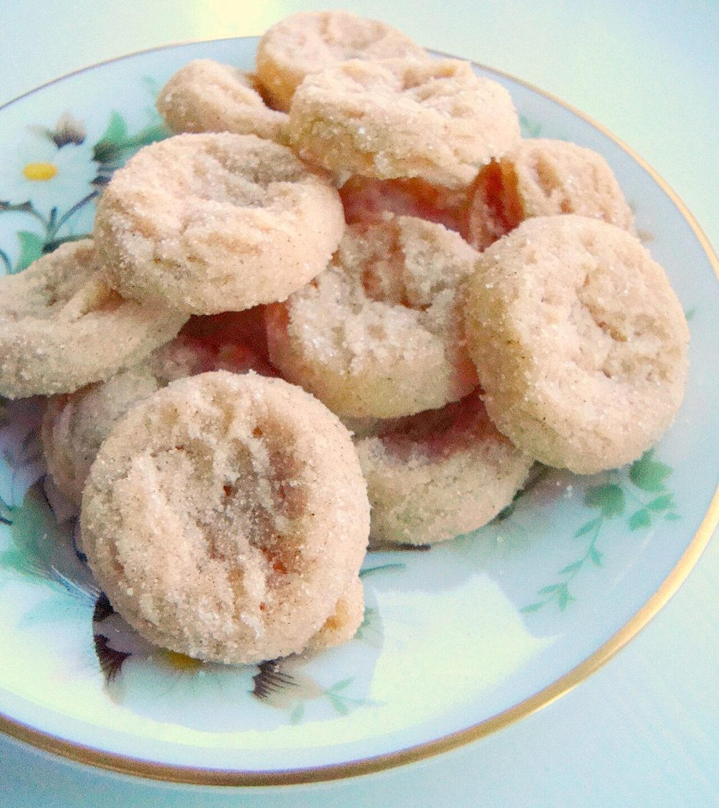

店のこと
店のこと
お店について確認できているのは、所在地とInstagramのアカウントだけです。
一画目
確認できていること
- 屋号は「菓子屋ヒスイ」、業種は菓子の店
- 所在地は茨城県結城市結城13609(〒307-0001)
- 電話番号はなし。連絡はInstagramから
- 営業時間・定休日・お品書き・価格・ご予約・駐車場は準備中


二画目
想像してみる(制作側の創作)
この欄は制作側が想像して書いたもので、お店の実際の様子・考え・提供内容とは関係がありません。
もしここに写真が並ぶなら、一枚ずつ丸い皿やお菓子の写りをゆっくり眺められるページにしたい。そんな想像から、写真を大きく置く作りにしています。
Instagramの投稿を見て気になった方が、住所や連絡の取り方をすぐ確かめられるよう、必要な情報は各ページの下にもまとめています。
お店の情報
| 所在地 | 〒307-0001 茨城県結城市結城13609 |
|---|---|
| 電話 | なし |
| 営業時間 | 準備中 |
| 定休日 | 準備中 |
| ご予約 | 準備中 |
| 駐車場 | 準備中 |
| SNS | Instagram @kashiya_hisui |